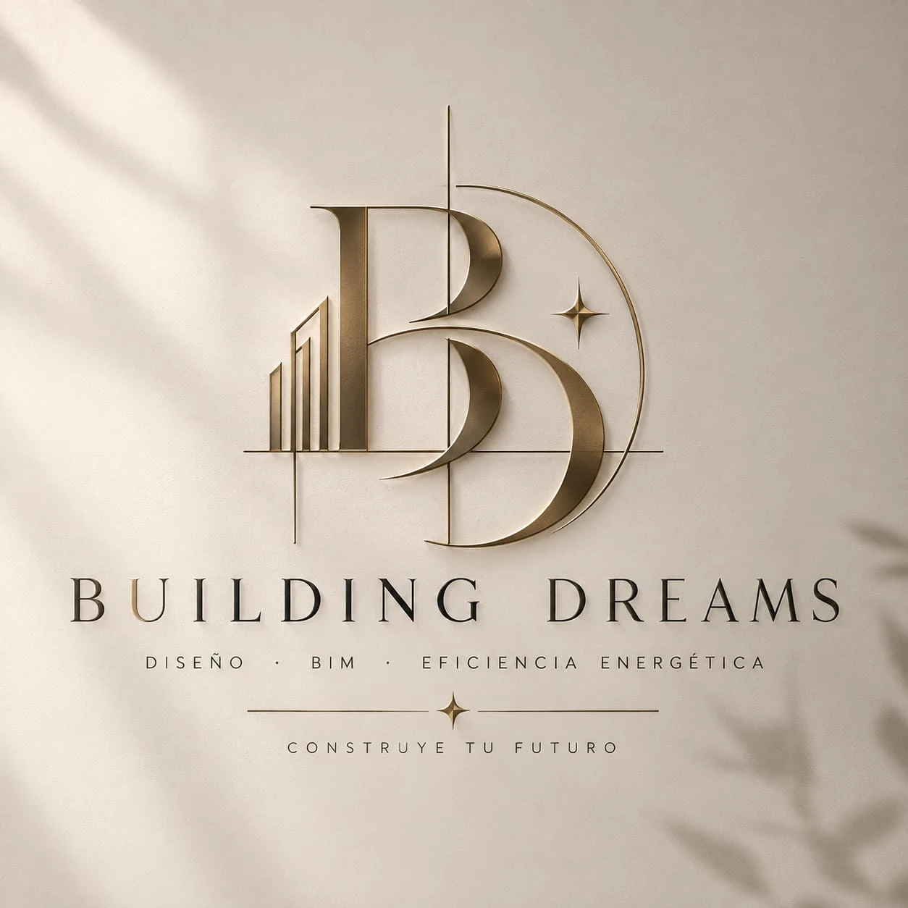
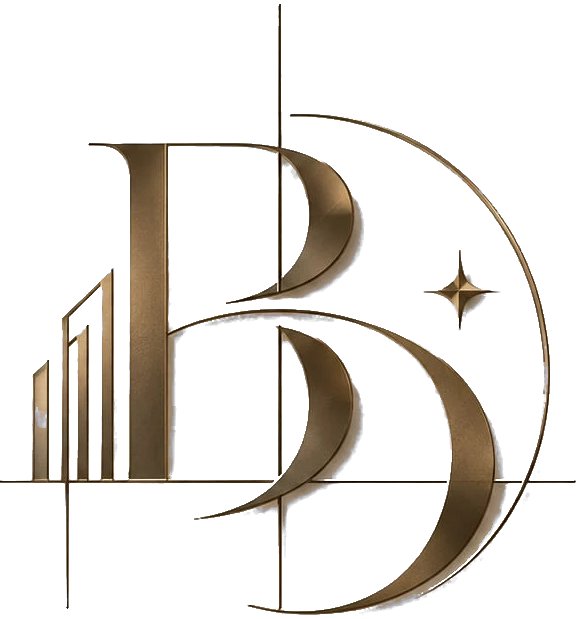

Versión 1.0 · 2026
Building Dreams es una firma de diseño, modelado BIM y eficiencia energética para vivienda. Su identidad combina la precisión de un plano técnico con la calidez de materiales nobles: líneas finas, bronce y papel crema.
Diseño · BIM · Eficiencia energética
Construye tu futuro
Elegante, precisa, aspiracional y confiable. Tono cercano pero profesional; se habla de “usted” o de “tú” con calidez, sin tecnicismos innecesarios.
El logo se compone de un monograma B en serif de alto contraste, un skyline de tres barras ascendentes (construcción y crecimiento), una línea de nivel y un eje vertical (lenguaje de plano), un arco que sugiere el recorrido del sol (eficiencia energética) y una estrella de cuatro puntas (los “sueños”).

Building Dreamsassets/img/logo-building-dreams.webp. Uso en portada, presentaciones y material impreso.assets/img/isotipo.png, fondo transparente, extraído del logo original): favicon, redes sociales, avatar.Nota: el isotipo es un recorte del logo original del cliente (raster, 580 px de alto). Para impresión de gran formato se debe solicitar el vector original.
Mantener libre alrededor del logo un margen igual a la altura de la “B”. Tamaño mínimo: isotipo 24 px / 8 mm; wordmark horizontal 120 px / 30 mm de ancho.
Colores extraídos del logo: el crema del muro, los tonos de bronce y oro del metal y el casi negro del wordmark. Los valores CMYK son aproximados; validar con prueba de impresión.
Texto principal, wordmark, fondos oscuros
Sombras del isotipo, títulos secundarios, overlays
Color de acento: botones, enlaces, detalles. Contraste 4.9:1 con blanco
Acento sobre fondos oscuros, cifras destacadas, brillos
Fondos alternos, separadores, tarjetas
Fondo base de la marca (muro del logo)
50% crema · 20% arena · 18% tinta · 8% oro bronce · 4% oro claro. El oro es un acento: nunca debe dominar la composición.
Solo para el isotipo y detalles ornamentales (líneas, estrellas). No usar en bloques de texto.
Combinación de una serif de alto contraste (como la del wordmark) con una sans geométrica ligera para textos y descriptores, ambas de Google Fonts.
Titulares, wordmark, cifras destacadas. Pesos 500–700. El wordmark va en mayúsculas con tracking +20%.
Texto corrido, botones, descriptores. Pesos 300–600. Descriptores en mayúsculas con tracking +25%.
| Nivel | Fuente | Tamaño web |
|---|---|---|
| H1 | Cormorant Garamond 600 | clamp(2.6rem, 5vw, 4rem) |
| H2 | Cormorant Garamond 600 | 2.2–2.8rem |
| H3 | Cormorant Garamond 600 | 1.4rem |
| Cuerpo | Jost 400 | 1rem / 1.6 |
| Descriptor / eyebrow | Jost 500 · MAYÚSCULAS +25% | 0.8rem |
Tokens definidos en css/styles.css: --color-primary-dark (tinta), --color-primary (bronce), --color-accent (oro), --color-gold (oro claro), --color-bg (crema), --color-bg-alt (arena); --font-heading (Cormorant Garamond) y --font-body (Jost).